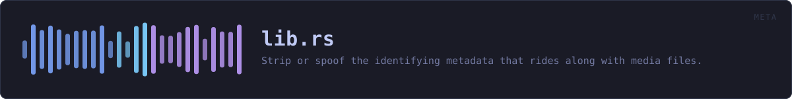

crates/veilvoice-meta/src/lib.rs
veilvoice-meta · 111 lines · read the source
Strip or spoof the identifying metadata that rides along with media files.
Why this exists
De-identifying a voice accomplishes nothing if the file still says who recorded it. A phone recording routinely carries the device model, the recording software, a precise timestamp and — for images — GPS coordinates accurate to a few metres. That is often a far easier way to identify someone than analysing their voice, and it survives every DSP transform because it is not in the audio at all.
Strip versus spoof
Removing every tag is not always the least conspicuous choice. A file with no metadata whatsoever is itself a signal: it says the sender was trying to hide something, and it stands out in a set of otherwise ordinary files. [Policy] therefore offers two approaches:
- [
Policy::Strip] — remove everything. Best when the file is expected to be sanitised anyway, or when any false statement would be worse than an obvious absence. - [
Policy::Realistic] — replace the tags with plausible, non-identifying values so the file looks unremarkable rather than scrubbed.
What this crate cannot do
It removes container metadata. It cannot remove information encoded in the media itself: a photograph still shows the room it was taken in, and audio still carries its room acoustics and background noise. Nor does it touch filesystem timestamps or the filename, both of which are outside the file — callers that care must handle those separately.
WHAT CALLS WHAT
The functions this file defines, and the calls between them. An edge means the callee's name appears, called, inside the caller's body — a syntactic reading, not a type-resolved one.
The same graph as Mermaid source
%%{init: {"theme":"base","themeVariables":{"background":"#1a1b26","primaryColor":"#1f2335","primaryTextColor":"#c0caf5","primaryBorderColor":"#7aa2f7","secondaryColor":"#16161e","tertiaryColor":"#16161e","lineColor":"#737aa2","textColor":"#c0caf5","mainBkg":"#1f2335","nodeBorder":"#7aa2f7","clusterBkg":"#16161e","clusterBorder":"#2f3549","fontFamily":"ui-monospace, SFMono-Regular, Consolas, monospace","fontSize":"14px"}}}%%
flowchart TD
n_note["Report::note"]
n_from["Error::from"]
n_fmt["Error::fmt"]
n_source["Error::source"]This site loads no third-party script, so it cannot run Mermaid; the diagram above is the same nodes and edges drawn by the generator instead. GitHub renders the source below directly.
ITEMS
| Item | Line | Documentation |
|---|---|---|
VERSION pub const | 47 | Crate version string, surfaced in the About panel. |
Policy pub enum | 51 | How aggressively to rewrite metadata. |
Report pub struct | 62 | What changed in a single file. |
Report::note fn | 70 | |
Error pub enum | 79 | Everything that can go wrong in this crate. |
Error::from fn | 89 | |
Error::fmt fn | 95 | |
Error::source fn | 105 |